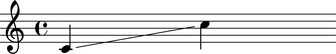

The Abjad _GlissandoInterface class
The Abjad _GlissandoInterface class manages note, rest and chord glissandi.
Public interface
Notes
Glissandi are managed through the _GlissandoInterface. All Leaves posess this interface.
abjad> note = Note(0, (1, 4)) abjad> note.glissando _GlissandoInterface
Attributes
The _GlissandoInterface interface has no attributes particular to it.
All its attributes are inherited from the _Interface class.
Usage
Glissandi can be set in two ways:
- By "wrapping" an Abjad Component (be it a Container or a Leaf) with the
Glissandospanner. - By setting the glissando attribute of a
_Leafinstance to true.
abjad> note1 = Note(0, (1, 4)) abjad> note2 = Note(12, (1, 4)) abjad> note1.glissando = True abjad> voice = Voice([note1, note2]) abjad> show(voice)
To unset the glissando attribute simply set it to False or None.
abjad> note1.glissando = False